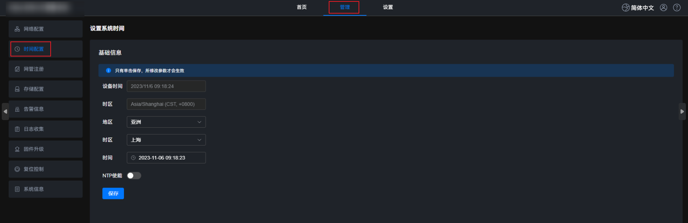
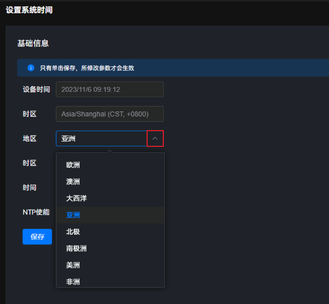
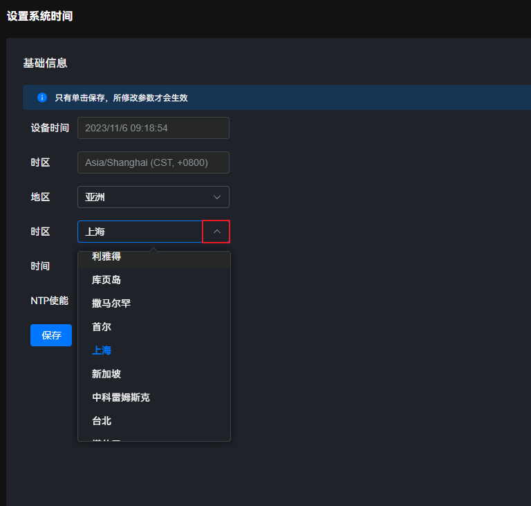
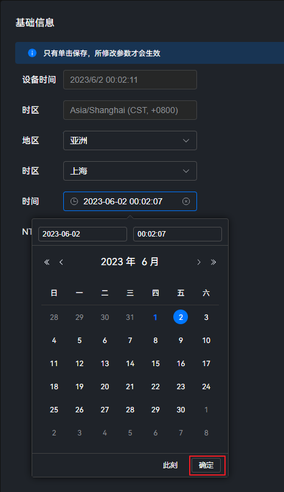
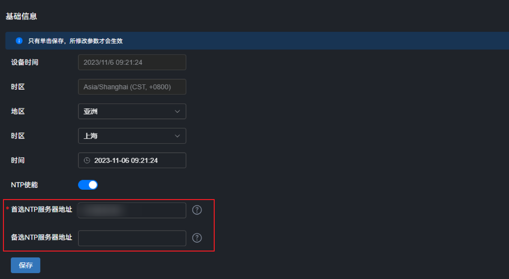

系统自动获取当前PC客户端的时间或时区，您可以选择NTP服务自动将NTP服务器的时间同步到设备，也可以选择手动校正时间然后同步到设备。

目前NTP服务出厂设置即为默认关闭，在Web界面上仅支持配置IP地址和开关。打开NTP服务有安全风险，如果需要配置端口、keys等安全选项，请在后台配置。
使用场景
边缘设备的典型应用场景，例如智慧交通、智慧园区、智慧零售等，需要统一视频数据的时间；因此需要边缘设备支持从统一的时间服务器中同步时间。
参数说明
参数名称 |
参数说明 |
|---|---|
设备时间 |
显示设备的当前时间。 |
时区 |
边缘管理系统的时区。 时区信息由“地区”和“时区”组成。 默认值为“UTC”。 |
设置地区和时区
- 在主菜单中选择，设置系统时间。图1 设置系统时间
 - 在“地区”下拉列表中，选择要设置的参数。图2 设置地区
 - 在“时区”下拉列表中，选择要设置的参数。图3 设置时区
 - 单击“保存”。页面上方弹出“保存成功”提示框，“时区”将显示为用户设置的“地区”+“时区”信息。图4 设置地区和时区

设置系统时间
用户可选择“手动校正时间”或“NTP自动同步时间”其中任一方式设置系统时间。
- 手动校正时间。
- 在主菜单中选择。图5 设置系统时间
- 单击“时间”后下拉列表框，设置所需的日期和时间。
- 系统支持设置的时间范围为2015-01-01 00:00:00到2099-12-31 23:59:59。
- 修改时间可能引起证书和密码过期。如果因修改时间导致证书过期，请登录后台，重启系统即可恢复。
图6 手动配置PC客户端时间
 - 单击“确定”。
- 单击“保存”。页面上方弹出“保存成功”提示框。图7 保存时间设置

- 在主菜单中选择。
- NTP自动同步时间。
- 在主菜单中选择。图8 设置系统时间
- 单击
 ，打开“NTP使能”开关。图9 打开NTP使能
，打开“NTP使能”开关。图9 打开NTP使能
- 根据界面提示配置NTP服务器地址信息，配置项参考表3。图10 配置NTP服务器地址
 - 单击“保存”。页面上方弹出“保存成功”提示框，此时设备时间显示为NTP服务器的时间。图11 保存NTP使能配置

如果边缘设备下挂端侧设备，根据用户组网场景，端侧设备也可通过配置同步到网络NTP Server的时间。
前置条件：边缘设备其中一个网卡的IP可以连通NTP Server。- Atlas 200I A2 IP：a200I_ip1（连通NTP Server的IP）
- 与端侧同网段的IP：a200I_ip2
- 端侧设备IP：device_ip
具体配置如下：
- 配置端侧设备IP。
- 场景1：端侧设备IP和边缘设备连接的NTP Server的IP在同一网段。
端侧设备默认路由同边缘设备的配置一致，只需要在ntp的配置中指向NTP Server的IP即可。
- 场景2：端侧设备IP和边缘设备连接的NTP Server的IP在不同网段，但与边缘设备其他网卡IP在同一网段。
端侧配置路由指向小站的同网段IP：route add -net 0.0.0.0 gw a200I_ip2
- 场景1：端侧设备IP和边缘设备连接的NTP Server的IP在同一网段。
- NTP Server中配置反向路由：route add -host device_ip gw a200I_ip1
- 在主菜单中选择。